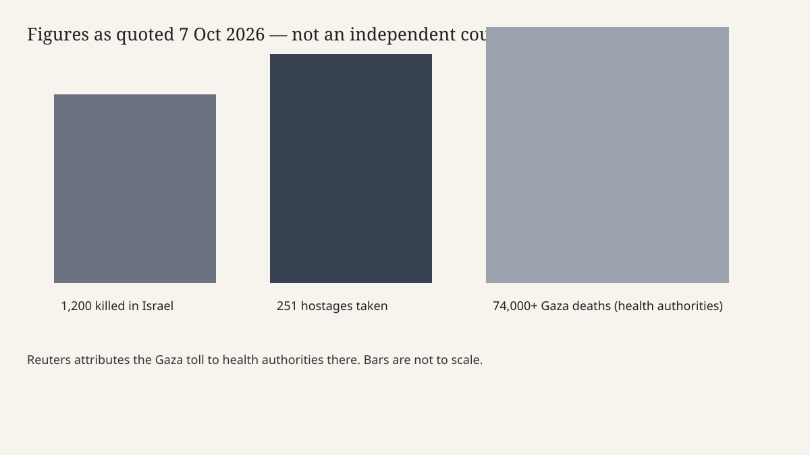

Israel · Gaza · 7 October 2026
Israel marked three years since the 7 October 2023 attacks as Gaza’s toll stayed a health-authority figure.

What is agreed across desks
Wednesday 7 October 2026 is three years after the Hamas-led attacks of 7 October 2023. Reuters, filing from Jerusalem, calls that day the deadliest in Israel’s history and repeats the figures that wires have used since the first week: militants killed 1,200 people and took 251 hostages to Gaza. CNN uses “more than 1,200” killed and the same hostage count, and times the start at 6:29 in the morning. Those two numbers, and the date, are the shared core.
Reuters says Israelis would hold a vigil at the Nova music-festival site near the Gaza border, where it says 348 young people were killed, and a commemoration at Hostage Square in Tel Aviv. CNN describes ceremonies, memorials and protests at more than 400 locations, and distinguishes Wednesday’s grassroots events from official state memorials it says were held on Monday, including a wreath-laying by Prime Minister Benjamin Netanyahu at Mount Herzl. A Reuters picture caption places a roadside-shelter visit near Re’im and a memorial by the October Council near the Knesset. The still on this page is an archive exterior of the parliament building, not those gatherings.
Both desks say the anniversary is the first without hostages still held in Gaza. Reuters says the dead and the living were exchanged for Palestinians held in Israeli jails, and that the remains of the last Israeli hostage were recovered in January. A year-old ceasefire is described as meant to halt the war. Reuters also says Gaza’s conditions remain dire despite that ceasefire. CNN says Netanyahu, at a cabinet meeting, spoke of near-daily Israeli strikes in Gaza and of more fighting ahead. “Ceasefire” in these pieces is a named agreement that both desks say has not stopped strikes. It is not a synonym for quiet.
What is a reported toll, not a census
Reuters says Israel’s bombardment and ground operations have killed more than 74,000 people in Gaza, “health authorities there say.” CNN attributes the same “more than 74,000” to the Palestinian Ministry of Health. Neither piece in front of this desk is an independent body count. The figure moves when the ministry updates it. A chart on this page draws the quoted magnitudes and says the bars are not to scale, because 1,200, 251 and 74,000 are different kinds of counts: killed in the attack, taken hostage, and a cumulative wartime death figure from one authority.
CNN reports a separate Netanyahu sentence: Israel had killed “4,000 out of 6,000” militants who infiltrated on 7 October 2023, and “we will reach all of them.” That is a speaker’s ratio. It is not the 1,200 or the 74,000. Mixing the three numbers into one “the dead” erases who is counting whom.
What is only a quote
Netanyahu’s cabinet lines are political speech on the eve of an election. Reuters says the anniversary falls 20 days before an Israeli election. It does not, in the text used here, name the polling day. Twenty days before 7 October is not an arithmetic trick this article will turn into a date without the wire printing it. Campaign claims about who failed on the morning of the attack are outside the agreed tolls. A memorial banner reading “The price of failure. 1163 murdered. 251 hostages,” described in a Reuters caption, is a protester’s or organiser’s text. 1,163 is not the 1,200 used in the Reuters lead. The gap is a reason to keep both figures labelled, not to average them.
Calls for an independent state inquiry, attributed by Reuters’s caption to the October Council, are a demand. They are not a published commission report. CNN’s note that many Wednesday events were organised by survivors and families describes the organisers. It does not certify every speech at those events.
What the story is not
It is not a finding that the war has ended because a ceasefire text exists. Both desks describe continued strikes. It is not a finding that the war is the same operation as October 2023. A year-old ceasefire, a January recovery of remains, and “near daily” strikes are three different statements. It is not a count of American casualties or a U.S. force posture. Those are other stories. The U.S. interest on this page is the anniversary as a dated public event that American wires led with, not a vote in Congress.
Photographs of grief at a festival site are not used here. The hero is a parliament exterior so the page does not select a face to carry the argument. The second image is a schematic of quoted figures, not a map of responsibility.

What is still unknown on this page
The exact Wednesday crowd sizes, the text of any new ceasefire clause, and a forensic reconciliation of 1,200 against 1,163 are not in the pieces scored below. A later ministry table can move the Gaza figure. Until it does, the honest sentence is the attributed one.
Source articles and scores
| Outlet | Headline | T | N | C |
|---|---|---|---|---|
| Reuters | Israelis mark three years since Hamas attack that set off Gaza assault | 94 | 0 | 90 |
| Reuters pictures | Israel marks three years since October 7 attacks | 90 | 0 | 92 |
| CNN | Israel marks three years since October 7 attack with memorials and protests | 86 | -6 | 78 |